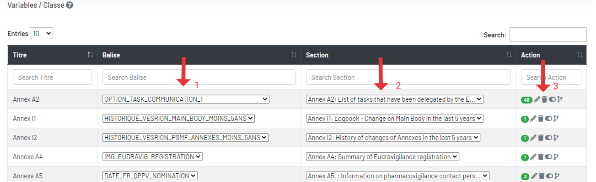
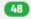
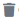
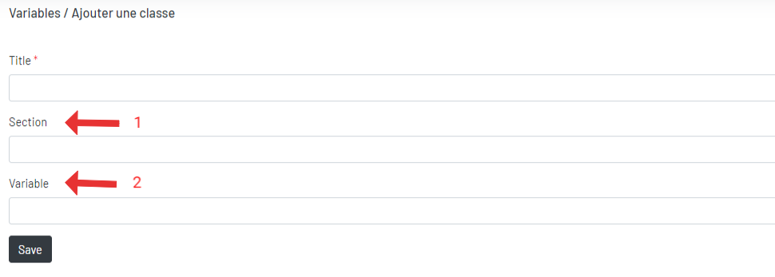
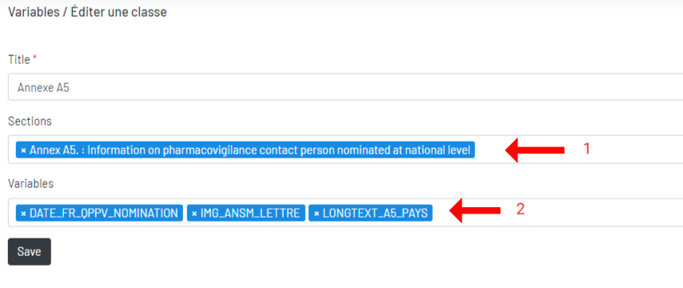

Classe
Les variables sont classées en classes.
1. Liste des classes

1Une classe peut avoir plusieurs variables (balises)2Une classe peut avoir plusieurs sections ou plusieurs annexes, donc ces variables locale peut s'afficher dans le menu de droit de l'édition de la section ou de l'annexe. Plus3Vous pouvez modifier, désactiver/activer, supprimer une classe.-  Nombre de variables associées à cette classe.
 Modifiez une classe.
Modifiez une classe. -  Supprimez une classe.
 Désactivez/activez une classe.
Désactivez/activez une classe.  Historique des modification d'une classe.
Historique des modification d'une classe.
 Ajoutez une classe.
Ajoutez une classe.
2. Ajouter une classe

1Une classe peut avoir plusieurs sections ou plusieurs annexes, donc ces variables locales associées peuvent être affichées dans le menu de droit de l'édition de la section ou de l'annexe. Plus2Une classe peut associer plusieurs variables (balises)
3. Modifier une classe

1Une classe peut avoir plusieurs sections ou plusieurs annexes, donc ces variables locales associées peuvent être affichées dans le menu de droit de l'édition de la section ou de l'annexe. Plus2Une classe peut associer plusieurs variables (balises)